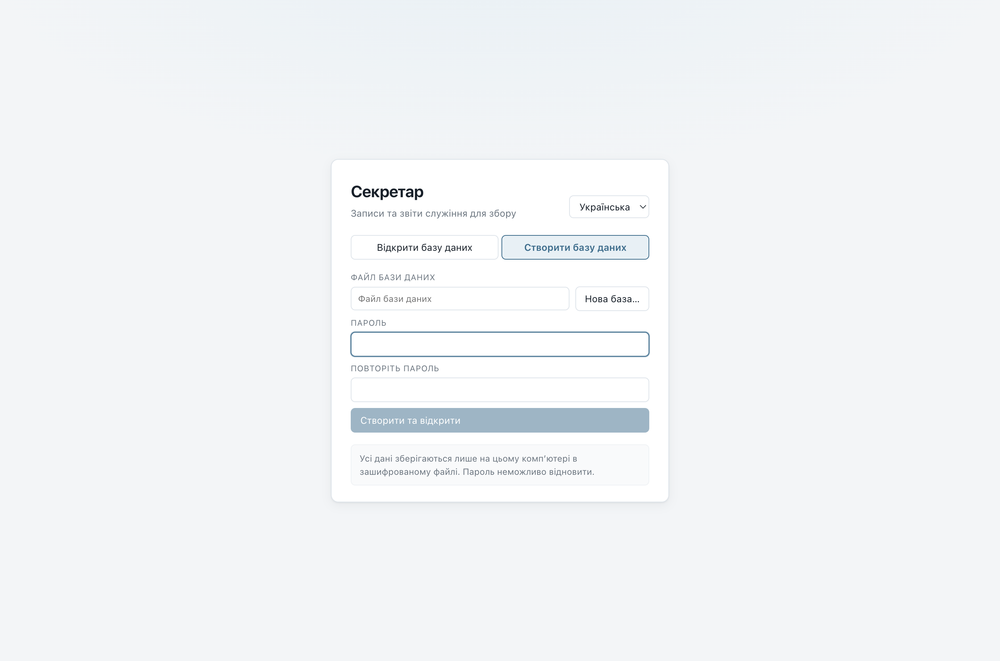
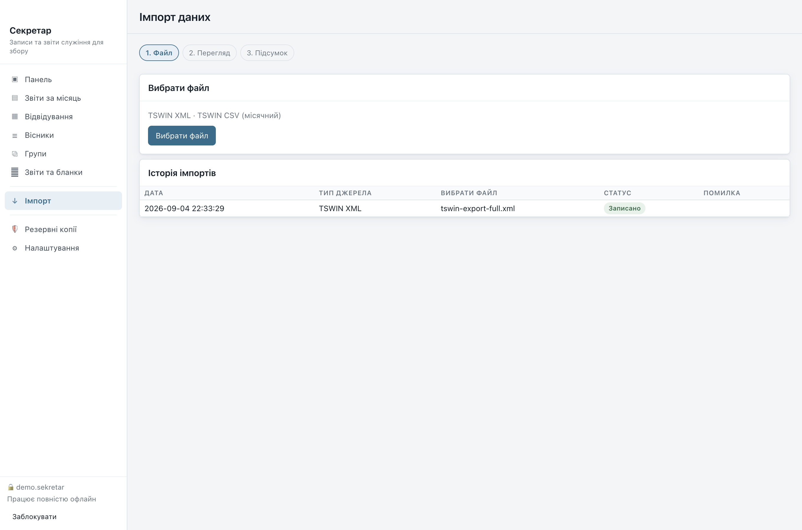
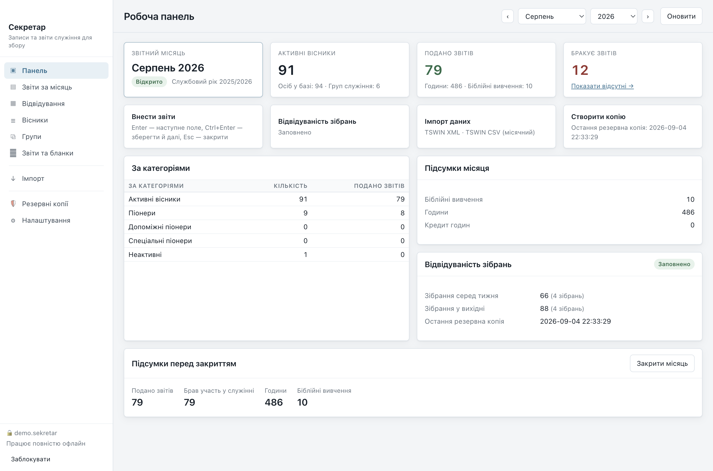
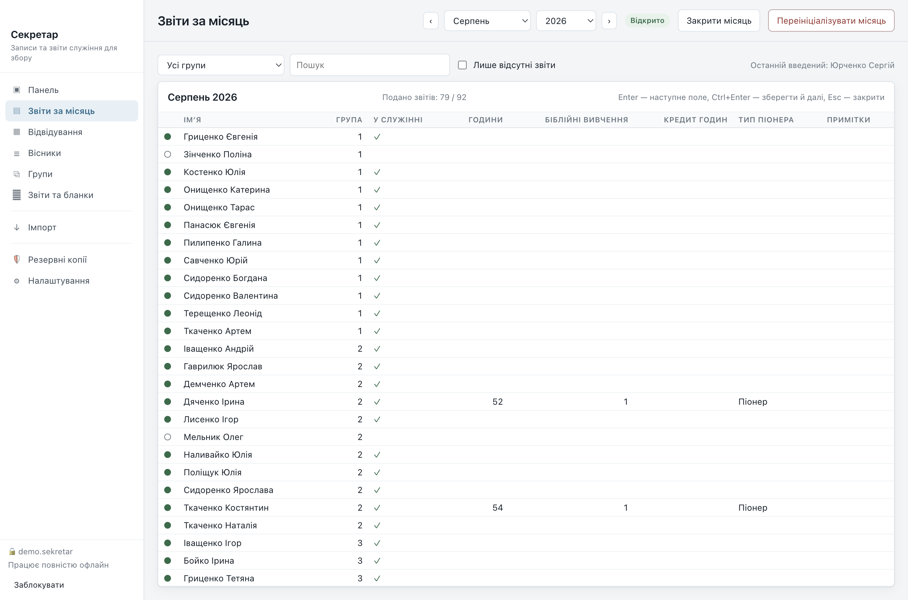
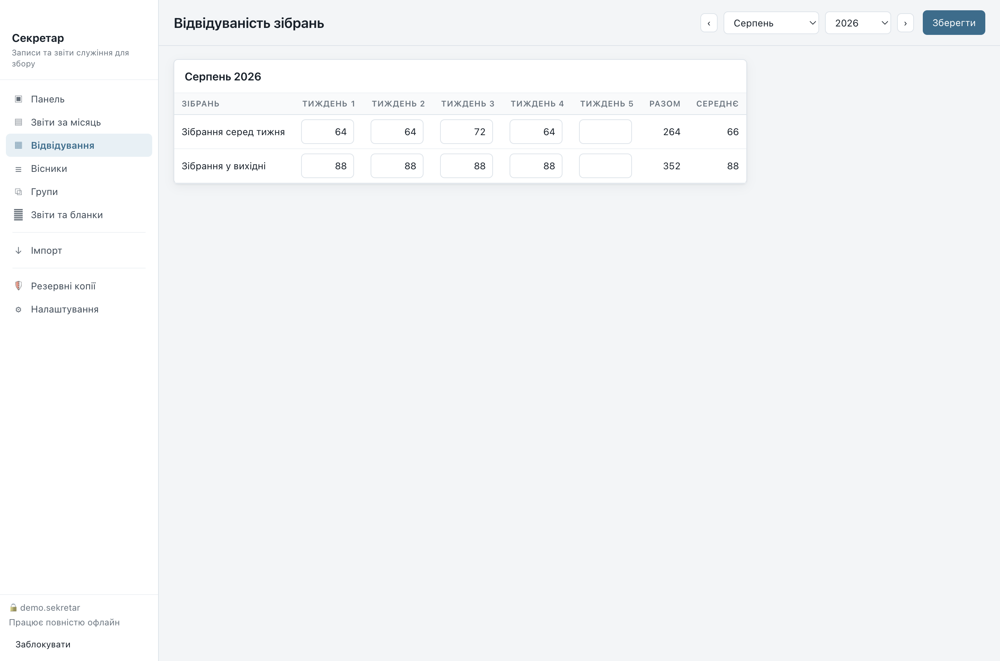
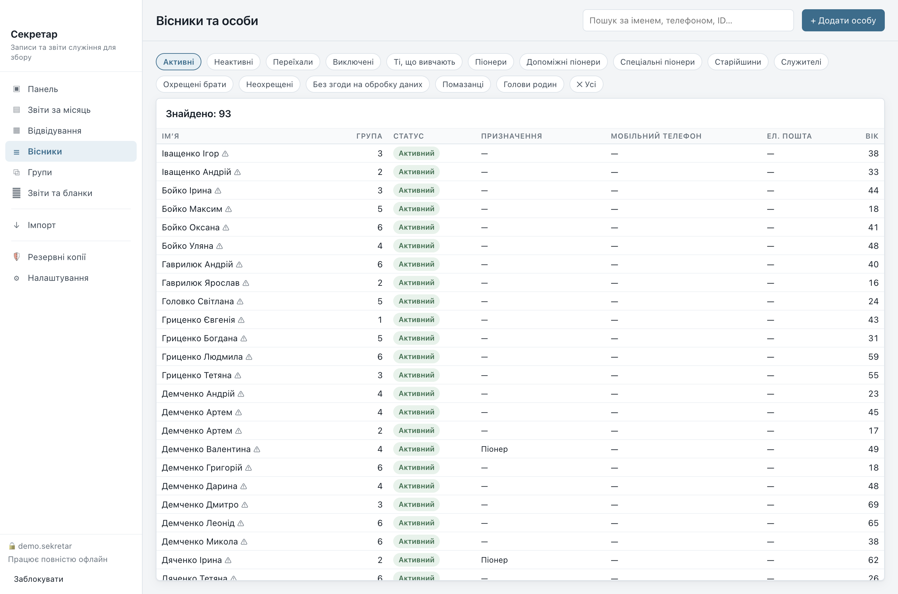
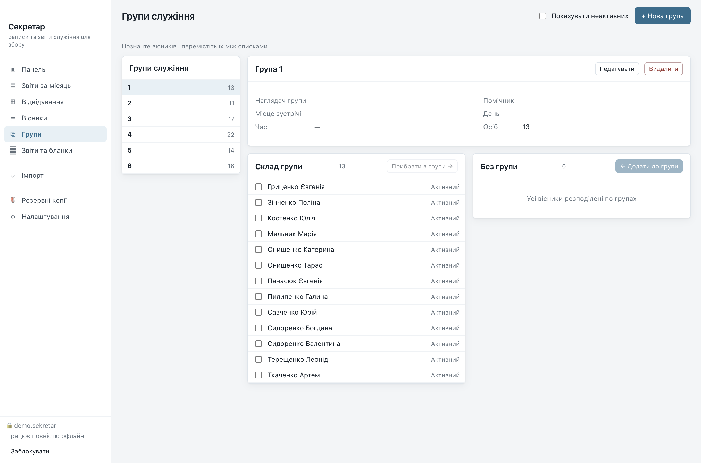
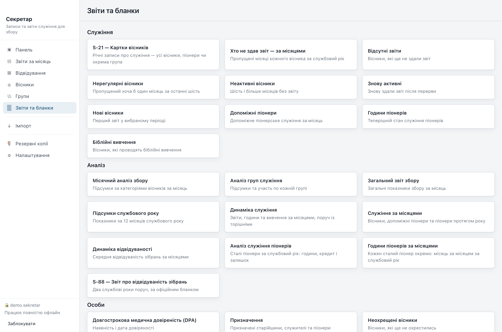
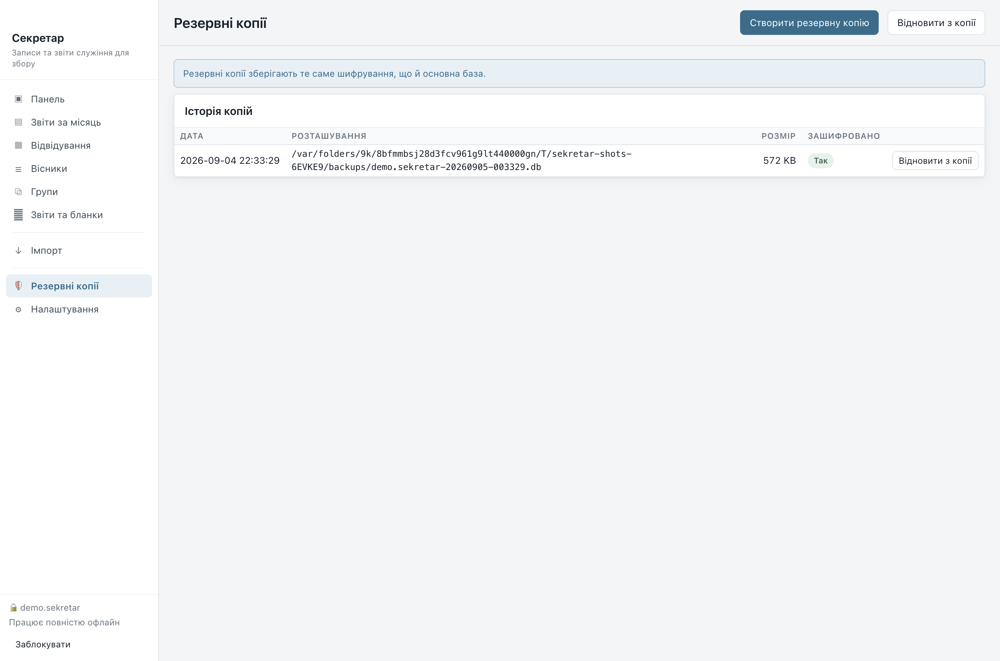
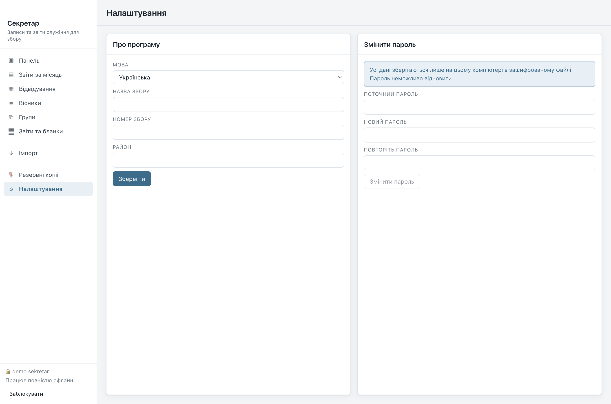

Порядок роботи за місяць — від першого запуску до зданого звіту. Знімки екрана зроблено з вигаданим збором; справжніх даних тут немає.
Крок 1
Усі записи збору лежать в одному зашифрованому файлі на вашому комп'ютері. Під час першого запуску програма просить створити його та придумати пароль.

Пароль неможливо відновити. Ніхто, включно з автором програми, не може прочитати ваш файл або скинути пароль — саме тому дані й лишаються приватними. Запишіть пароль і зберігайте окремо від комп'ютера.
Надалі програма відкриватиметься цим самим вікном: файл уже вибрано, треба лише ввести пароль. Кнопка «Заблокувати» внизу ліворуч закриває базу, не виходячи з програми.
Крок 2
Якщо збір вів записи в TSWIN або TSWINU, не треба вводити нічого вручну. Програма читає експорт XML (вісники, групи та історія звітів) і місячні файли CSV.

Якщо ім'я з файлу підходить до кількох осіб у базі, програма не вгадує — вона позначає рядок як конфлікт і чекає на ваше рішення. Файл, який не вдається прочитати надійно, буде відхилено з поясненням, а не імпортовано наполовину.
Щомісяця
Панель показує стан звітного місяця: скільки вісників активні, скільки звітів здано, скільки бракує. Місяць угорі праворуч можна перемкнути, щоб подивитися попередні.

«Бракує звітів» веде до списку тих, хто ще не здав. «Підсумки перед закриттям» унизу показують, що піде у звіт збору, і містять кнопку закриття місяця.
Щомісяця
Це головна сторінка секретаря. Усі вісники в одному списку за групами; для кожного позначається участь у служінні, а для піонерів — години.

Щомісяця
Кількість присутніх на зібраннях серед тижня та у вихідні, за тижнями. Середні значення програма рахує сама — саме вони потрапляють у бланк S-88.

Записи
Картка кожного вісника: контакти, адреса, родинні зв'язки, призначення, дата хрещення, піонерське служіння, медична довіреність і особисті нотатки.

Історія зберігається. Коли вісник переходить в іншу групу, стає піонером або припиняє служіння, попередній запис не стирається — він закривається датою. Тому торішні звіти й далі показують те, що було насправді тоді.
Записи
Групи служіння з наглядачем і помічником. Вісників можна переносити між групами; дата переходу зберігається.

Друк
Тридцять три звіти, зібрані за призначенням: служіння, аналіз, особи та контакти. Серед них офіційні бланки S-21 (картки вісників) і S-88 (звіт про відвідуваність).

Готовий звіт можна надрукувати, зберегти в PDF або вивантажити таблицею (CSV чи TSV) для електронних таблиць.
Перед кожним вивантаженням програма нагадує, що у файлі — особисті дані збору, і що поза зашифрованою базою вони більше нічим не захищені. Це нагадування не можна вимкнути.
Безпека
Копія створюється однією кнопкою й шифрується тим самим паролем, що й основний файл. Зберігайте копії на іншому носії — зламаний диск забирає з собою і базу, і копії поруч із нею.

Налаштування
Мова інтерфейсу — українська або англійська, змінюється будь-коли. Тут же змінюється пароль бази.
